Exercício 1 - Eclipse
Contexto
Nesse exercício vamos aprender a como se conectar à um sistema HANA pelo Eclipse e como criar um novo projeto de desenvolvimento.
Conectando à Plataforma HANA
Abra a perspectiva de HANA Development no Eclipse em "Window>>Perspective>>Open Perspective>>Other":
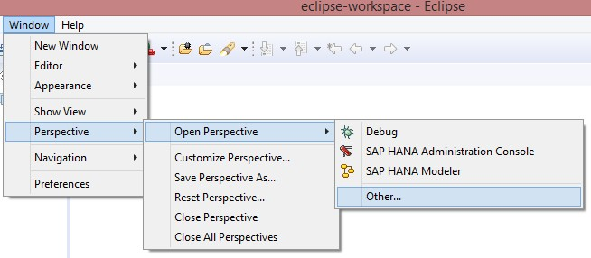
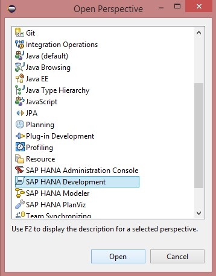
Com a perspectiva aberta, clique em "Add System":
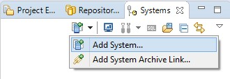
Na tela aberta preencha os dados com o host da plataforma HANA, a instância, o "Tenant", o idioma e uma descrição para identificar o ambiente, depois clique em "Next":
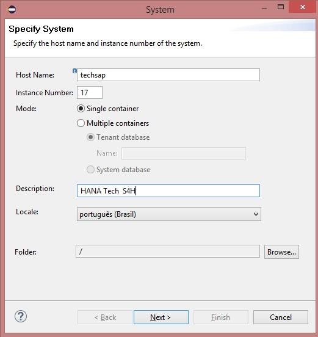
Informe seu usuário e senha, clique em "Next" e depois em "Finish"
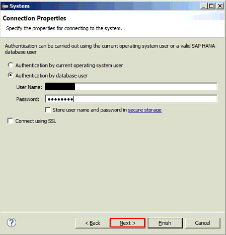
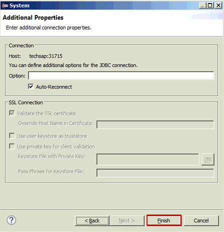
Caso seja seu primeiro logon, o sistema vai pedir para você redefinir sua senha:
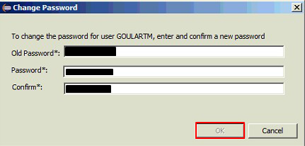
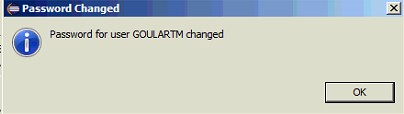
O sistema HANA vai aparecer no seu workspace:
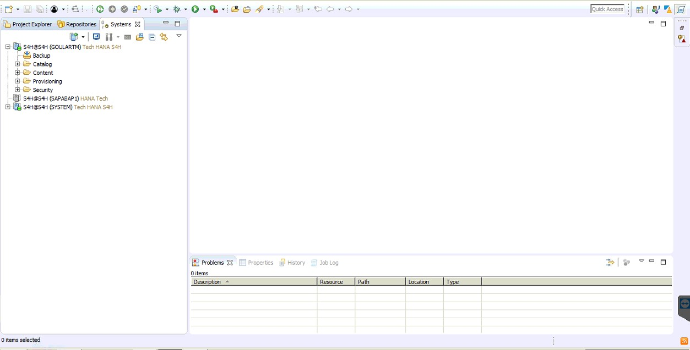
Adicionando um novo repositório
Nesse passo vamos criar um repositório novo para utilizamos para os desenvolvimentos. Vá na aba "Repositories":
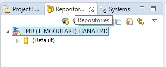
Clique em "Create Repository Workspace":
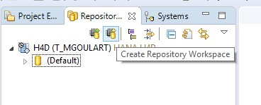
Dê o nome do repositório seguindo o padrão "tech_username" e clique em "Finish":
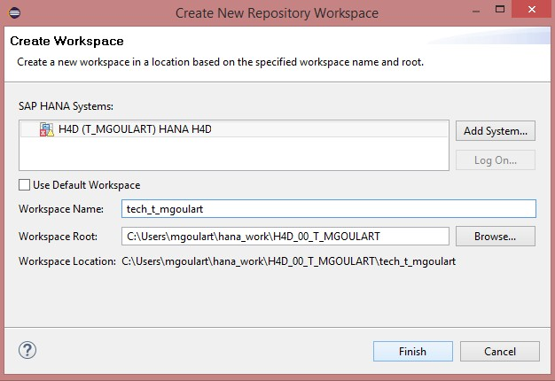
Criando um novo projeto
Nessa etapa vamos criar um novo projeto ligado ao repositório criado no passo anterior. Acesse a aba "Project Explorer":
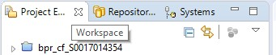
Crie um novo "XS Project" indo em "File>>New>>XS Project":
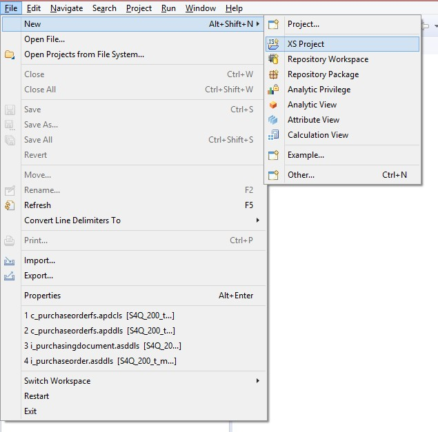
Dê o nome do projeto de "Tech_Treinamento_USERNAME", e depois clique em "Next":
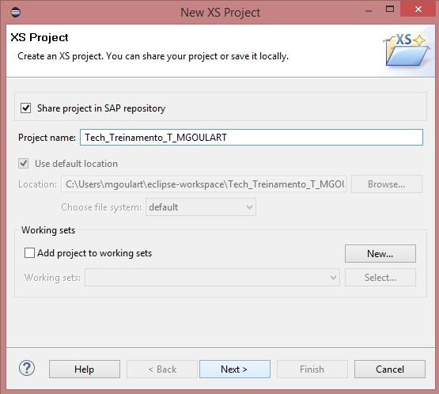
Selecionem o workspace/repository criado no passo anterior e desmarquem a opção Add Project Folder as Subpackage:
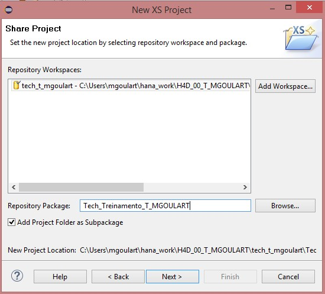
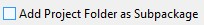
Cliquem em "Browse" e selecione o pacote "mog":
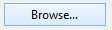
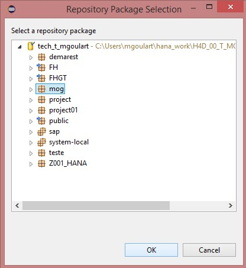
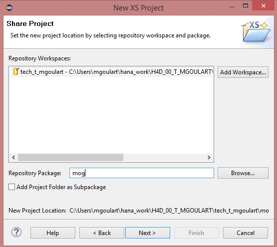
No campo "Repository Package" complemente o valor "mog" com o seu usuário, ficando com um padrão "mog.username", em sequência clique em "Next":
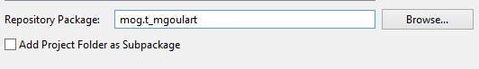
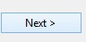
Desmarque todos os checkbox dessa última tela, e clique em "Finish":
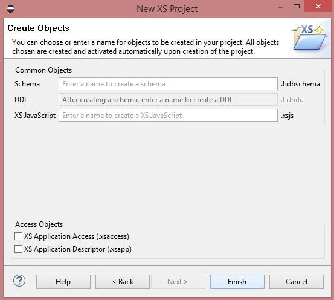
Erro de File Encoding
Após o projeto ser criado provavelmente vai ocorrer um erro de "File encoding Cp1252 not supported", devido ao Eclipse não estar configurado para trabalhar com formato de arquivo UTF-8. Para corrigir esse problema vá em "Window>Preferences"
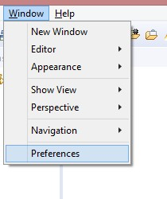
Acesse o menu "General>Workspace":
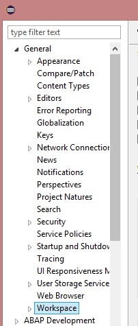
Altere a configuração de Text file encoding de "Default (Cp1252)" para "Other", selecionando a opção "UTF-8":
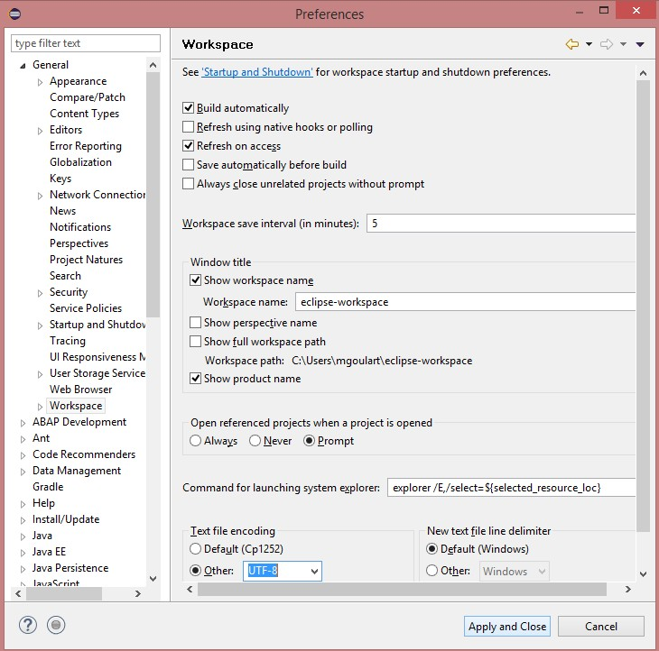
Projeto não aparece no Project Explorer
Em algumas versões do Eclipse, o XS Project não está configurado para aparecer na perspectiva de "HANA Development". Caso após você criar o seu projeto o mesmo não aparecer na aba "Project Explorer" da perspectiva de "HANA Development", acesse a perspectiva de "Java":
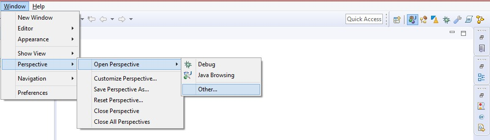
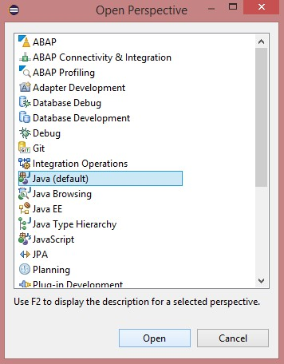
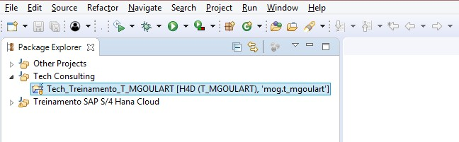
Ativando seu projeto
Após o projeto ser criado no passo anterior, o pacote criado com o projeto ("mog.username") vai existir apenas localmente na sua máquina (design-time). Vamos então ativar o mesmo, para que o pacote que foi criado no projeto seja espelhado no HANA em tempo de runtime.
Clique com o botão direito em cima do seu projeto, e acesse o menu "Team>Activate All...":
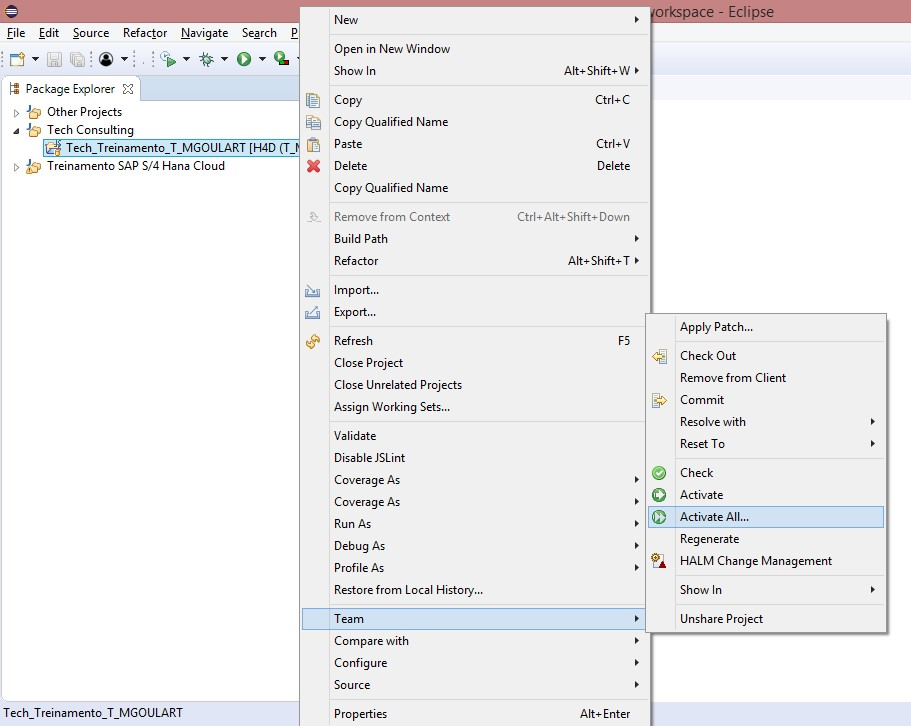
Marque todos os objetos e clique em "Ok":
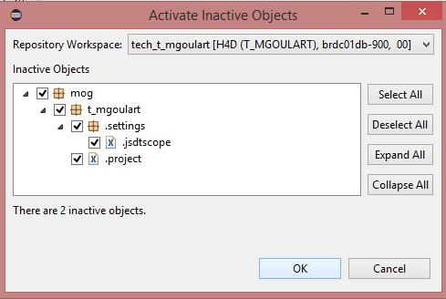
Na view de "Job Log" você pode acompanhar o processo de ativação, e se o mesmo concluiu com sucesso ou se ocorreu algum erro:
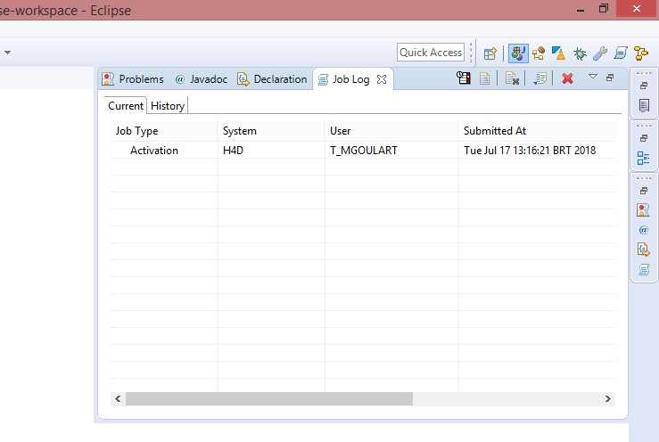
Após a ativação ser concluída, nosso pacote estará commitado no HANA. Para verificar, acesse a aba "Systems" e verifique a pasta "Content", o seu pacote deverá constar como um subpacote do pacote "mog":
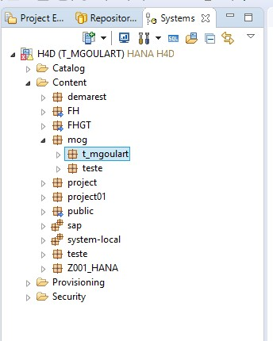